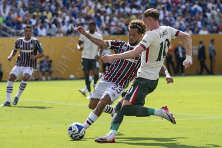

This time last week, João Pedro was on a Brazilian beach; now he’s in the Club World Cup final , handed a standing ovation by old fans and new. The 23-year-old forward had been on holiday in Rio de Janeiro when they called to say his £60m transfer to Chelsea had been completed and could he come straight here.
Two days and a single training session later, he made his debut in Philadelphia, more than 4,000 miles north of home, a promising glimpse of a future. Four days after that, he was given his first start in New Jersey. It took 18 minutes to get a glorious goal. By the time he headed off, an hour in, he had another.
He didn’t celebrate either, but there will be another chance soon. He’ll be back here on Sunday, Chelsea delivered to the final day. He, perhaps more than any of them, knows what this means. “I can’t stop doing my job,” he had said the day before this semi-final against Fluminense; no one expected him to start doing it quite so quickly, and definitely not quite so well.
Yes, he had prepared – “I was in Brazil with friends but I have a personal trainer; imagine if I didn’t train and Chelsea called me to come,” he said – but still . This was something else, certainly compared to the Chelsea strikers who have gone before.
He might not even have had the chance to play at all but for the suspension of Liam Delap – but by the time he walked his work was done, a case made to start on his own merits. As he departed, João Pedro applauded the Chelsea fans to his left. Then he applauded the Fluminense fans to his right. Please allow me to introduce myself . And: sorry about that . Both applauded back, from Rio de Janeiro to the MetLife and a whole new life, this was his moment.
He had scored two, both of them brilliant strikes, and had been as good as his word. The first bent into the top corner; the second battered off the bar and into the net. No, he had not promised to score, still less like that, but he had promised not to celebrate if he did. And so after each, up went the hands, in apology.
The team he had just defeated was his boyhood club. He had joined Fluminense at 10, travelling to live in Rio with his mother. “I went there and I didn’t have nothing. They gave me everything and they showed me to the world. I am very grateful,” he said after the match. “I am very sorry what happened to them, but I am a professional.”
The last of the Brazilian sides that have given this tournament so much, that have made it feel a little like, well, like a World Cup, now he it was who halted their journey. “It’s not about trying to end that,” he had said the day before.
Cole Palmer (No 10) has been on billboards in Times Square during the Club World Cup.Photograph: Anadolu/Getty Images
“I know how important it is for Fluminense and I believe it’s also very important for us. I’m so grateful for everything Fluminense have done for me, but I can’t stop doing my job. May the best team win, and may it be a great spectacle.”
The best team did win, although Marc Cucurella did clear one off the line and Chelsea did need a VAR interception to avoid a Fluminense penalty at 1-0. But in truth it wasn’t especially spectacular. The game wasn’t, anyway. The goals really were.
Out across the Hudson, in a place that is more parking lot than anything else, supporters had begun early occupying the vast, exposed expanses surrounding the MetLife. Heat rose from the floor, the smell of hot Tarmac mixing with tailgate barbecues the Brazilians brought. Huge great grills of meat under gazebos.
Fluminense fans outnumbered Chelsea supporters but there were a lot of blue shirts, too. There was no sign of João Pedro’s 20 among them yet. Cole Palmer, who looks out over Times Square accompanied by the slogan “Scary Good”, appeared the most popular. Others brought a nostalgic touch – there were lots of Lampards out there.
By the time they had gone through the gates, past the sign warning that no weapons were allowed inside, they had missed the US national anthem, belted out to empty stands an hour before kick-off at every game here. They weren’t entirely full by the time the teams came out one player at a time – João Pedro wasn’t the most cheered then, but he would be – but with tickets on sale 17 times cheaper than for Madrid against Paris Saint-Germain on Wednesday, it got quite close: 70,566 came. There was the countdown to kick-off, 3pm on a working day. And then they played.
This wasn’t always the fastest game, nor the most dramatic. It was hot down there – that was shown when it wasn’t just the players who escaped inside at half-time but the fans, too – and it never truly felt like Chelsea would not win. Nor was it a surprise. The identity of the man who carried them there was, and it was written.
“We’re the ugly duckling,” the Fluminense coach, Renato Gaúcho, had said, but one of them had grown, and flown, something beautiful celebrated all round this stadium, his moment shared with everyone.